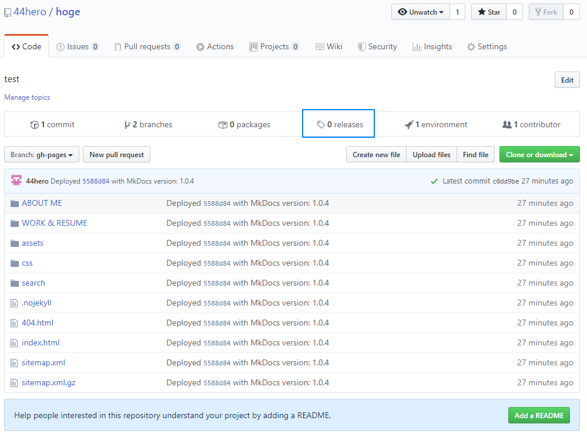

環境構築とオペレーション¶
■環境構築¶
mkdocsをPCで使えるように環境構築するまでの流れです。
参考：https://qiita.com/wamisnet/items/ed725d74f945f7c06b91
●要件とインストールの流れ¶
最新のpythonであればpipコマンドを使用して、mkdocs の install ができる
-
python 2系、python 3系、のインストール
https://www.python.org/
2020年02月 時点では python3.8 ではmkdocsが対応できない為、
python3.7.6 をインストールする。
インストールが無事に終わったら
python --version
と PowerShell で入力. インストールが問題なければ3.5.2と返ってくるはず
ついでにpipが無事にインストールできているか確認
pip --version
と入力してバージョンがかえってくれば大丈夫 -
mkdocs のインストール
pip install mkdocs
ファイルをダウンロードしてからインストールするので少々待つ
インストールが終わったら
mkdocs --version
と入力してインストールが問題ないことをチェック -
mkdocsのテーマとライブラリをインストール
おすすめであるマテリアルデザインのテーマをダウンロード
pip install mkdocs-material
もう一つ, プログラムのコードをハイライトをかけることができるライブラリをダウンロード
pip install pygments -
インストールした全ライブラリのリスト
その他、pip install したプラグイン全リスト -更新の可能性大！！-
これで環境構築は完了です！
●mkdocsの場所をつくる¶
eg: C:\Users\●●●\program\mkdocs
●mkdocsプロジェクトの作成と、確認¶
例えば testDocs という mkdocs のプロジェクトを、local の mkdocs フォルダ内に, Windows のTerminal or PowerShell を使用して作成
eg: C:\Users\●●●\program\mkdocs\testDocs
-
Terminal or PowerShell にてコマンドを入力
コマンドラインでドキュメント保管するフォルダーに移動しておく
ちなみにフォルダーの移動はcdコマンドで移動できる
cd ..で一つ上の階層
cd フォルダー名でそのフォルダーに移動できる -
場所がそこで良いことを確認して、次のコマンドを入力
mkdocs new testDocs
testDocsというフォルダが作られ、C:\Users\●●●\program\mkdocs\testDocs
その中に必要となるファイルが自動生成される
1 2 3 4
../mkdocs/testDocs ├ docs │ └index.dm └ mkdocs.yml -
フォルダを
cd testDocsと入力して移動 -
移動した後
mkdocs serveと入力 -
ローカル上でサーバーが立ち上がるので、ブラウザでアクセスしてみる
http://127.0.0.1:8000 -
各ユーザーPCにある、Notepad++ app 等の text editor app を利用して、
index.md, mkdocs.yml
ファイルを編集すると、ブラウザがリアルタイムで更新されて行くのが確認できます。
¶
■新規¶
<新規>で、mkdocsからgithub に一発でアップロードするまでの連携手順と流れです。
ネットにサーバーを立てずとも、ユーザー自身の作成したwebページをネット公開出来ます。
-
補足
さまざまなコマンド名が出現するが、いくつか定義を解説すると。。- commit(コミット) & push(プッシュ) とは
github リポジトリへ、local データをアップロードする一連の動作を、
どうやら、commit(コミット) & push(プッシュ) と呼ぶらしい。。。 - commit → セーブ
push → セーブデータをサーバに保存
pull → セーブデータをサーバからローカルにロード
ローカルリポジトリに変更を反映するのが「Commit」
リモートリポジトリに変更を反映するのが「Push」です。
イメージとしては、
メールの下書き保存がCommit、メールの送信がPush的な？。。
- commit(コミット) & push(プッシュ) とは
●githubリポジトリの作成¶
先ず、例えば hoge というリポジトリを, github で作成する場合は、
https://github.com/44hero/
github にて
New repositoryを押下
- Repository name を
hogeと登録。
Publicにして、 -
Initialize this repository with a README
にチェックを入れ、
Create repositoryを押下。
https://github.com/44hero/内に、https://github.com/44hero/hoge.gitが作成される
●mkdocsプロジェクトの作成からデータのgithubへのpush¶
次に、例えば hoge という mkdocs のプロジェクトを、local の mkdocs フォルダ内に, Windows のTerminal or PowerShell を使用して作成
eg: C:\Users\●●●\program\mkdocs
Terminal or PowerShell にて、
-
以下を順に実行していきます。
1 2 3 4 5 6 7 8 9 10 11 12 13 14 15 16 17 18 19 20 21 22 23 24 25 26 27 28 29 30 31 32 33 34 35 36 37 38 39 40 41 42 43 44 45 46 47 48 49 50 51 52 53 54
# 先ず、参照元のgithubを clone します。 git clone https://github.com/44hero/hoge.git # すると、hoge という mkdocs のプロジェクトが、 # C:\Users\●●●\program\mkdocs\hoge に作成される。 # 中身を見ると、README.md が作成されているので、捨てる。 # この現象の理由は、予め、github ページに、https://github.com/44hero/hoge.git # を作成し終えているからであり、clone を実行したからです。 # mkdocs new hoge # C:\Users\●●●\program\mkdocs\hoge フォルダができたので、 # hoge フォルダまで遡っておく。 cd hoge # 過去の、参考となる、docs フォルダと、mkadocs.yml ファイルを # C:\Users\●●●\program\mkdocs\hoge 内へコピーしておく！！ # 実際の更新作業に移りたいので、 # 以下のコマンドを実行する。 mkdocs serve # 更新編集モードに入るので、 # VSCode, Notepad++ .. etc 等の、コードエディタappを使用して、更新作業をしていく。 # 更新作業のリアルタイム表示は、ローカル上でサーバーが立ち上がるので、 # ブラウザで以下にアクセスする。 # http://127.0.0.1:8000 # note: セーブしない限りは、更新されない！ # eg: 一旦作業を停止したいときは、`ctrl + c` で終了できる。 # eg: 画面内容をクリアーしたいときは、cls で履歴をクリアーできる。 # 編集作業.... # .... # 最後に、mkdocs gh-deploy を実行し、デプロイすることで、以下①②③を自動で行ってくれる。 # ①<mkdocs buildに相当> # C:\Users\●●●\program\mkdocs\hoge # 同一階層内に、build された site フォルダが自動でできる. # C:\Users\●●●\program\mkdocs\hoge\site # ②<git branchに相当> # また, https://github.com/44hero/hoge.git へ、 # 自動で gh-pages という、2個めの branch が、github の所定箇所へ作成される。 # これを、「ブランチを切る」と言うらしい。 # branch は最初は master しかない。 # ③<git commit, git pushに相当> # また、C:\Users\●●●\program\mkdocs\hoge\site フォルダの中身を、 # 自動でいっぺんに コミット&プッシュ(アップロード)する。 mkdocs gh-deploy -m "It is good to write something in the message." # -m "" には、 # 「メッセージを何か記述しておくと良い」が、極力日本語は避けた方が良いみたいだ。 # 以上をもって、一発目のgithubのリポジトリへのアップロード作成が完了したことになる。 # https://github.com/44hero/hoge.git には、 # master, gh-pages という、2つの branch が作成されている。 # また、gh-pages へ新規で、site 内容が全部アップロードされているのが確認できる。-
補足
git cloneコマンド とは
既存のリモートリポジトリをローカルに落とすために使うコマンド。
例えば、GitHubに公開されているリポジトリを自分のコンピュータへ落とすときに使う。mkdocs gh-deployコマンド とは
自動でgh-pagesブランチを作成し，プッシュしてくれる．
つまり，git pushの代わりにmkdocs gh-deployコマンドを実行するという意味である．-
deploy(デプロイ)とは
デプロイとは、主にネットワークを通じて提供されるWebアプリケーションなどのシステム開発工程において、
システムを利用可能な状態にすることである。
デプロイ（deploy）という言葉は元々、配置する、展開するといった意味の英語である。
mkdocs コマンド
コマンド 用途 mkdocs new [projectname]実行に必要な最低限のフォルダとファイルを作成 mkdocs buildサイトに必要なファイルを生成 mkdocs serveローカルで確認したい場合 mkdocs gh-deployサイトシステムを利用可能な状態にすること。配置、展開を意味する。 git コマンド（使用頻度が高い一部を抜粋。。）
コマンド 用途 git initローカルリポジトリを作る git statusファイルの状態を確認 git addファイルを登録する git commit -m "●●●●●●"メッセージ付きで、コミットする 参考サイト
app 参考サイト mkdocs https://www.mkdocs.org/ mkdocs(gh-deployについて) https://www.mkdocs.org/user-guide/deploying-your-docs/ github https://techacademy.jp/magazine/6235#sec4_1
-
ここまでくれば、ほぼ終わり。
後ちょっと。。
●githubリポジトリへのpushの確認とサイト公開¶
最後は、github のhoge というリポジトリを確認すると、
github にて
https://github.com/44hero/hoge.git
masterbranchと同列に、gh-pagesbranchが確認できれば成功！！
- そして、
gh-pagesbranchに移動すると、先程の自身のlocal PC の
C:\Users\●●●\program\mkdocs\hoge\siteで自動作成されたのと同様のファイル構成が、
確認できれば成功！！
- まだ、公開(パブリッシュ)されていません！！
releasesを押下、以下を実行することで、どうやら公開(パブリッシュ)が出来るようです。
 Create a new releaseを押下.
- 公開のTarget となる
gh-pagesを選択したまま、以下を入力していく。
-
任意で、以下のように入力して、最後に
Publish release押下する。
-
最後は、
https://44hero.github.io/hoge/
(https://(ユーザー名).github.io/(リポジトリ名)/)
にアクセスすると、ユーザーがlocalで作成されたもののhtml版が、ネットに公開されていることが確認できます！！
このように、ネットにサーバーを立てずとも、ネット公開が出来ます。
¶
■継続¶
<継続>で、mkdocsからgithub に一発で更新アップロードするまでの連携手順と流れです。
一旦公開したサイトを、更新する手順です。
●mkdocs/../siteフォルダを削除し、再度 mkdocs gh-deploy¶
windows のTerminal or PowerShell を使用して、mkdocs serve していく。以下に手順を示す。
厳密にはmkdocs/../siteフォルダ は削除しなくてもよいのだが、
理解しやすいように、ユーザー側にあるlocalデータのsiteフォルダを削除しておくとよい。
C:\Users\●●●\program\mkdocs\hoge\site
-
以下を順に実行していきます。
1 2 3 4 5 6 7 8 9 10 11 12 13 14 15 16 17 18 19 20 21 22 23 24 25 26 27 28 29 30 31 32 33 34 35 36 37 38 39 40 41 42 43
# C:\Users\●●●\program\mkdocs\hoge フォルダまで辿っておく # hoge フォルダまで遡っておく。 cd hoge # 念のため、現在のブランチ一覧を見ておく。 # 作業中のブランチには「*」が付き、緑色で表示される。 # * gh-pages # master # 現在のブランチが gh-pages, master と2つ存在し、 # 作業中のブランチが gh-pages であることが分かると成功している git branch # 実際の更新作業に移りたいので、 # 以下のコマンドを実行する。 mkdocs serve # 更新編集モードに入るので、 # VSCode, Notepad++ .. etc 等の、コードエディタappを使用して、更新作業をしていく。 # 更新作業のリアルタイム表示は、ローカル上でサーバーが立ち上がるので、 # ブラウザで以下にアクセスする。 # http://127.0.0.1:8000 # note: セーブしない限りは、更新されない！ # eg: 一旦作業を停止したいときは、`ctrl + c` で終了できる。 # eg: 画面内容をクリアーしたいときは、cls で履歴をクリアーできる。 # 編集作業.... # .... # 最後に、mkdocs gh-deploy を実行し、改めてデプロイすることで、 # 以下の①②を自動で行ってくれる。 # ①<mkdocs buildに相当> # C:\Users\●●●\program\mkdocs\hoge # 同一階層内に、build された site フォルダが自動でできる. # C:\Users\●●●\program\mkdocs\hoge\site # ②<git commit, git pushに相当> # C:\Users\●●●\program\mkdocs\hoge\site フォルダの中身を、 # 自動でいっぺんに コミット&プッシュ(アップロード)する。 mkdocs gh-deploy -m "It is good to write something in the message." # -m "" には、 # 「メッセージを何か記述しておくと良い」が、極力日本語は避けた方が良いみたいだ。 # 以上をもって、githubのリポジトリへの更新が完了したことになる。 # https://github.com/44hero/hoge.git には、 # また、gh-pages へ上書きで、site 内容が更新アップロードされているのが確認できる。 -
最後は、
https://44hero.github.io/hoge/
(https://(ユーザー名).github.io/(リポジトリ名)/)
にアクセスすると、ユーザーがlocalで作成されたもののhtml版が、ネットに更新公開されていることが確認できます！！
¶
■理解不足¶
理解不十分の箇所を羅列します。
●他の方の MkDocsでサイト作り の紹介¶
ローカルにリポジトリを作成してリモートを設定しているやり方
https://wkou.github.io/mkdocstest/
●Terminal or PowerShell 操作で困ったとき¶
Terminal or PowerShell にて実行する、未だに理解が不完全なコマンドの、定義等をメモ
◆mkdocs & github 合わせ技編¶
- github に新規で手動リポジトリ
testDocs作成
mkdocs に新規で手動ローカルtestDocs作成
していた場合の、紐づけ・・？の仕方
1 2 3 4 5 6 7 8 9 10 11 12
cd C:/Users/●●●/program/mkdocs/testDocs git init # Gitリポジトリを新たに作成するコマンド # Initialized empty Git repository in C:/Users/●●●/program/mkdocs/testDocs/.git/ git branch # 現在のブランチ一覧を見る # git remote add origin https://github.com/44hero/testDocs.git # mkdocs gh-deploy -m "2020-02-21 21:25 upDate" # ...
他の現象として、
1 2 3 4 5 6 7 8 9 10 11 12 13 14 15 16 17 18 19 20 21 22 23 24 25 26 27 28 29 30 31 32 33 34 35 36 37 38 39 40 41 42 43 44 45 46 47
git init # ローカルでGitプロジェクトを作成するとき >Initialized empty Git repository in C:/Users/●●●/program/mkdocs/testDocs/.git/ git checkout master >error: pathspec 'master' did not match any file(s) known to git git push origin master # ローカルリポジトリの変更を、GitHub上にあるリモートリポジトリに反映させるため、以下のコマンドを実行します。 >error: src refspec master does not match any >error: failed to push some refs to 'https://github.com/44hero/testDocs.git' git branch # 現在のブランチ一覧を見る > gh-pages git remote add origin https://github.com/44hero/testDocs.git > git branch # 現在のブランチ一覧を見る > gh-pages mkdocs gh-deploy -m "2020-02-21 21:25 upDate" > git push origin master >error: src refspec master does not match any >error: failed to push some refs to 'https://github.com/44hero/testDocs.git' git push -u origin master # ブランチの移動 >error: src refspec master does not match any >error: failed to push some refs to 'https://github.com/44hero/testDocs.git' git branch gh-pages # ブランチの移動 >fatal: A branch named 'gh-pages' already exists. git checkout gh-pages # ブランチの移動 >Switched to branch 'gh-pages' git branch # 現在のブランチ一覧を見る >* gh-pages git branch master # master ブランチを切る git branch # 現在のブランチ一覧を見る >* gh-pages > master mkdocs gh-deploy -m "2020-02-21 22:00 upDate" >
◆mkdocs編¶
◆github編¶
- branch
git branch# 現在のブランチ一覧を見る
1 2
gh-pages * master
git checkout gh-pages# ブランチの移動
git branch# 現在のブランチ一覧を見る
1 2
* gh-pages master -
push
任意のブランチをリモート先にpushすることができ、リモート先のレポジトリに名前がない場合は作成される。
これはGitHubではこれはコマンドライン上でプルリクエストを送ることを意味する。 -
push -u
- ローカルリポジトリの現在のブランチの上流をorigin master に規定したことになる。
このオプションをつけると、次からは git push だけで上記のコマンドと同じことを実施できる。
git push -u origin masterとすると次回から git push だけで勝手に origin master で push してくれる。 - git push は、特に初めてブランチをPushするときに「-u」オプションをつけることを推奨されます。
このオプションにより、push 先のリモートブランチが、push 成功時に上流ブランチとして設定されます。
例えば、はじめてローカルのブランチ「master 」をレポジトリ「origin」にpush するときに、-u オプション
を付加すると、origin 上の master ブランチがローカル master の上流ブランチとして設定されます。 - 「上流ブランチ」とはやや定義がわかりにくく、Git 入門者にとって、とっつきづらい単語の１つです。
実際には、「ローカルブランチが、更新を追いかけるリモートブランチ」の事を指す
- ローカルリポジトリの現在のブランチの上流をorigin master に規定したことになる。
-
origin と master
-
前提知識
Gitは、分散レポジトリ
だから
「どのレポジトリ」の「どのブランチ」かを指定しないとわからないよ! -
origin と master
origin: レポジトリの場所(URL)の別名
master: ブランチの名前
つまり、"git pull origin master" は、originという名前のレポジトリのマスターブランチから、git pull しろと命令している。 -
デフォルト
origin と master はデフォルトだよ。
つまり、 "git pull" = "git pull origin master"
Gitでよく使うoriginとは、リモートリポジトリのアクセス先に対してGitが
デフォルトでつける名前なんですね。スッキリスッキリ。
-
以上